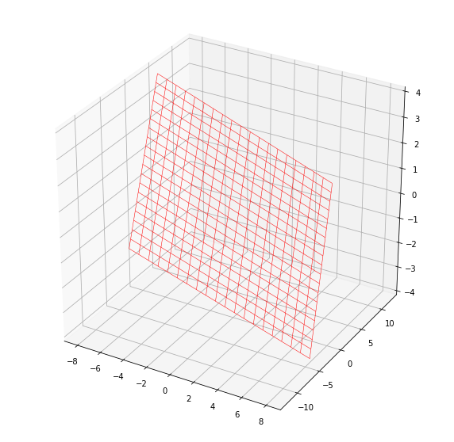

Lines and Planes
Readings
- Dr Choo Yan Min's treatment of lines and planes are good.
- https://tutorial.math.lamar.edu/classes/calciii/eqnsofplanes.aspx
- https://www.tuitionkenneth.com/h2-maths-parametric-scalar-product-cartesian
Plane Representation
The treatment below concerns planes embedded in three dimensions, specially in \(\R^3\). Therefore, these planes are necessarily a 2d-subspace.
Determination by contained points and lines
In a Euclidean space of any number of dimensions, a plane is uniquely determined by any of the following: * Three non-collinear points (points not on a single line). * A line and a point not on that line. * Two distinct but intersecting lines. * Two distinct but parallel lines.
Properties of 2D-Planes
The following statements hold in three-dimensional Euclidean space but not in higher dimensions, though they have higher-dimensional analogues: * Two distinct planes are either parallel or they intersect in a line. * A line is either parallel to a plane, intersects it at a single point, or is contained in the plane. * Two distinct lines perpendicular to the same plane must be parallel to each other. * Two distinct planes perpendicular to the same line must be parallel to each other.
Plane's Equations
Point–normal form and general form of the equation of a plane
In a manner analogous to the way lines in a two-dimensional space are described using a point-slope form for their equations, planes in a three dimensional space have a natural description using a point in the plane and a vector orthogonal to it (the normal vector) to indicate its "inclination".
Specifically, let \(\r_0\) be the position vector of some point \(P_0 = (x_0, y_0, z_0)\), and let \(\n = (a, b, c)\) be a nonzero vector. The plane determined by the point \(P_0\) and the vector \(\n\) consists of those points \(P\), with position vector \(\r\), such that the vector drawn from \(P_0\) to \(P\) is perpendicular to \(\n\). Recalling that two vectors are perpendicular if and only if their dot product is zero, it follows that the desired plane can be described as the set of all points \(\r\) such that:
The dot here means a dot product
Expanded this becomes
which is the point–normal form of the equation of a plane. This is just a linear equation:
where
which is the expanded form of \(-\n \cdot \r_0\).
In mathematics it is a common convention to express the normal as a unit vector, but the above argument holds for a normal vector of any non-zero length.
Conversely, it is easily shown that if \(a,b,c\) and \(d\) are constants and \(a,b,c\) are not all zero, then the graph of the equation
is a plane having the vector
as a normal. This familiar equation for a plane is called the general form of the equation of the plane.
Thus for example a regression equation of the form \(y = d + ax + cz\) with \(b=-1\) establishes a best-fit plane in three-dimensional space when there are two explanatory variables.
Intuition (Hongnan)
The idea is given a 2D-plane embedded in a 3-D space, then we start off by assuming there exists a point \(P_0 = (x_0, y_0, z_0)\) on the plane; furthermore, we define a vector \(\n = (a, b, c)\) such that this vector is orthogonal (perpendicular) to the plane - we call this vector a normal vector. Next, assume \(P = (x, y, z)\) be any point on the plane, and let us define the position vector of \(P_0\) and \(P\) to be \(\r_0\) and \(\r\) respectively.
From a mathematical standpoint, we are fixing the point \(P_0\) so that for any point \(P\), the vector formed by the difference of these two position vectors \(\r_0\) and \(\r\) will always lie in the plane. This is important, because now what we do next on this \(\r - \r_0\) will generalize for the whole plane.
By now, from the visual diagram in here, one should realize that given a fixed point \(P_0\) and any point \(P\), their difference in vectors \(\r - \r_0\) always lie on the plane, and is also necessarily orthogonal to the normal vector \(\n\). Thus, we can have by the orthogonal vectors has dot product \(\0\) to get:
This is a legit equation for the plane, and holds for any vectors lying on the plane. Why so? Because recall (even geometrically) that all vectors on the plane must be orthogonal/perpendicular to the normal vector, and therefore to check the validity of the equation, we just need to check if ANY POINT \(P\) on the plane, and substitute its positional vector \(\r_0\) into the equation \(\n \cdot (\r - \r_0)\), must this equation be \(\0\)? The answer is yes, because \(\r - \r_0\) is always a vector on the plane, and hence orthogonal to \(\n\).
Normal Vector need not touch the Vectors on the plane
If one is confused what is the meaning of the \(\r - \r_0\), say if this equals \(\r - \r_0 = (2, 3, 4)\) and the normal is \(\n = (2, -8, 5)\), then even though the vector \(\r - \r_0\) lies on the plane (which means the vector is not a position vector and does not start from the origin), that is okay because if one recalls what a vector is, we can "simply move the \(\r - \r_0\) to make it start from the origin", and this vector will now be "position vector", but still perpendicular to \(\n\) whether it touches it or not.
Describing a plane with a point and two vectors lying on it
Alternatively, a plane may be described parametrically as the set of all points of the form
where \(s\) and \(t\) range over all real numbers, \(\v\) and \(\w\) are given linearly independent defining the plane, and \(\r_0\) is the vector representing the position of an arbitrary (but fixed) point on the plane. The vectors \(\v\) and \(\w\) can be visualized as vectors starting at \(\r_0\) and pointing in different directions along the plane. The vectors \(\v\) and \(\w\) can be perpendicular, but cannot be parallel.
Note: In Linear Algebra, most mentions of planes are associated with vector spaces (subspaces), and hence contains the origin. Therefore, we often describe the plane as the set of points spanned by two linearly independent vectors.
notice that we do not specify \(\r_0\) here since we have the zero vector.
Vector Equation of a Plane
From the previous section, the Vector Equation of a plane is:
where \(d = \n \cdot \r_0\).

Fig; Vector and Cartesian Equation; Courtesy of https://www.tuitionkenneth.com/h2-maths-parametric-scalar-product-cartesian.
Cartesian Equation of Plane
From the previous section, the Cartesian Equation of a plane is:
where \(d\) is a constant \(-(ax_0 + by_0 + cz_0)\) and hence we are less pedantic about the sign in the equation above.
Parametric Equation of a Plane
The Parametric Equation of a plane is:

Fig; Parametric Equation; Courtesy of https://www.tuitionkenneth.com/h2-maths-parametric-scalar-product-cartesian.
How to plot a plane in Python
import matplotlib.pyplot as plt
import numpy as np
from mpl_toolkits.mplot3d import Axes3D
import scipy as sp
import scipy.linalg
Let's say you want to plot the column space of a matrix
where the column space of \(\A\) is just the span of the columns:
then it follows that since the two column vectors are linearly independent, then the span or rather the column space of \(\A\) is the set of points that make up a plane:
Then, to plot it, we can express the X, Y and Z components as follows:
fig = plt.figure(figsize = (10,10))
ax = fig.add_subplot(projection='3d')
s = np.linspace(-2, 2, 20)
t = np.linspace(-2, 2, 20)
S, T = np.meshgrid(s, t)
X = 3*S - T
Y = 2*S + 4*T
Z = -S + T
ax.plot_wireframe(X, Y, Z, linewidth = .5, color = 'r')
<mpl_toolkits.mplot3d.art3d.Line3DCollection at 0x277463733d0>
